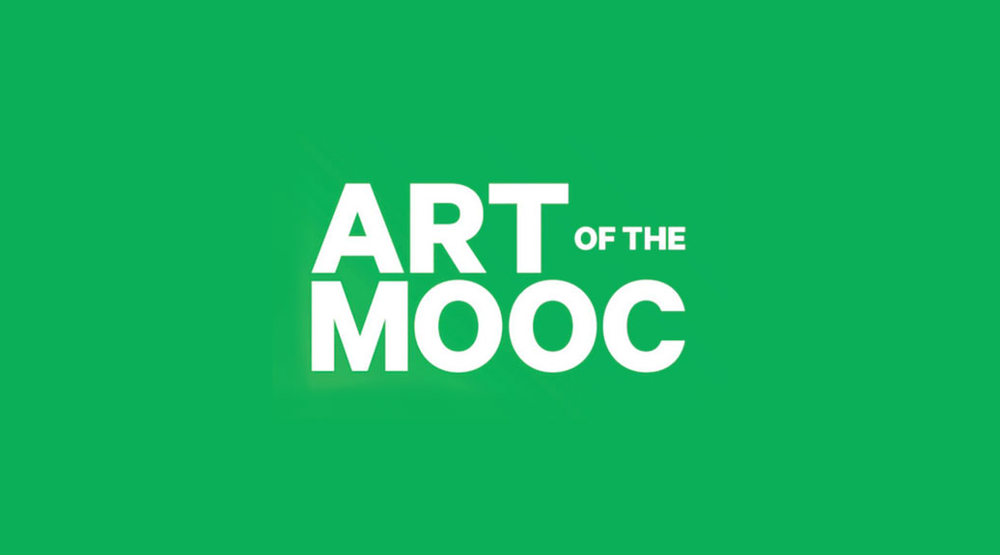
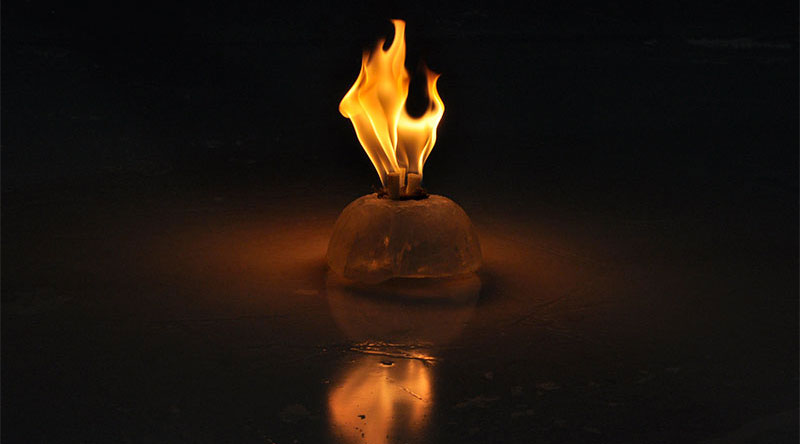
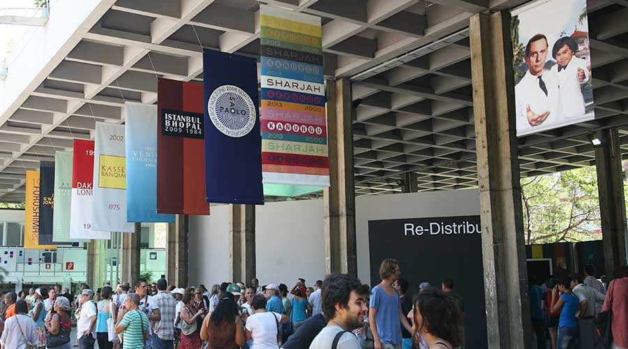
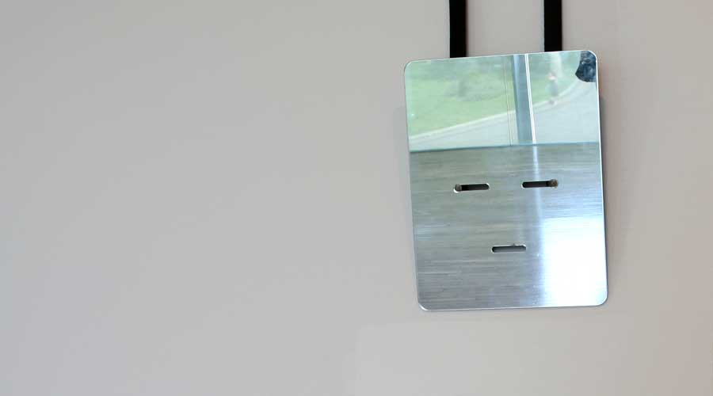
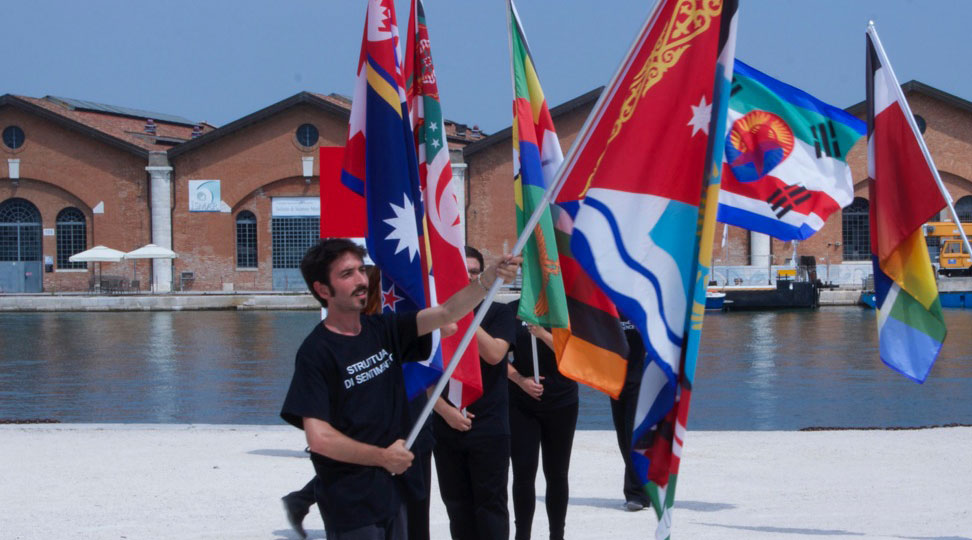
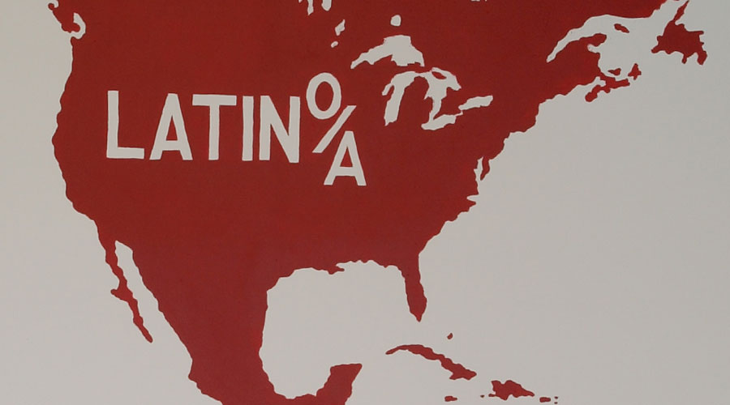

-

ART of the MOOC is a series of free massive open online courses (MOOCs) designed by visual artist and Duke professor Pedro Lasch to also be an international work of public art. Over 25,000 enrolled participants from 134 countries have joined the project since its launch in 2015.
-

FIRE & ICE collectively reimagines fire as a positive force, presented on the ice rink of Charlottesville’s Main Street Arena, opposed to the hatred that led to Heather Heyer’s tragic death.
-
The Weekly Monster began on November 8th, 2016. Taking the form of weekly black and white social media posts, special workshops, a gallery print edition, and posters displayed in public sites, the project collapses different aspects of the story of Frankenstein with contemporary world affairs.
-

Art Biennials and Other Global Disasters. Shown here 'Islands of Tragedy and Fantasy' installation at Pabellón Cuba. 12th Havana Biennial, 2015.
-
Black Mirror/Espejo Negro consists of museum installations and artworks produced for sites like the Nasher Museum, MUAC, Mexico’s National Palace Gallery and Prospect New Orleans.
-

'Naturalizations' is a work in progress based on the production and distribution of a set of masks, which are used in specific social situations. The masks are rectangular mirrors with slits in the eye and mouth areas, and elastic suspenders, which enable the users to move around freely while wearing them.
-

Abstract Nationalism includes paintings, videos, installations, and musical performances created for specific contexts, such as The Phillips Collection & Embassy Row in Washington, the 56th Venice Biennale, and Bologna’s Anatomical Theater.
-

This conceptual series consists of the presentation and distribution of a new map of the American continent, and the development of public art forms that are dispersed in everyday social spaces and exchanges. While it may be seen as a monument to the epics of migration, its goal is also to critically reflect on the form and function of conventional monuments.